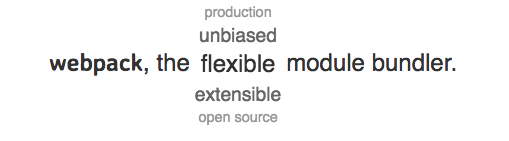

Created by 孙正斌
见 demo
无法使用.vue的形式定义组件
见 demo
无法接入其他的工程化插件, 而且 webpack 是模块打包工具并不是构建工具

见 demo
这种级别的组件, 目的不是复用而是切割页面的逻辑, 用原子级别的组件和自己实际的页面逻辑进行堆砌
{ant-design, bootstart-react, ...} => React
{ant-design-vue, vuestarp, ...} => Vue
{Angular-bootstarp, ...} => Angular
自己封装时, 遵循 Vue 的原则